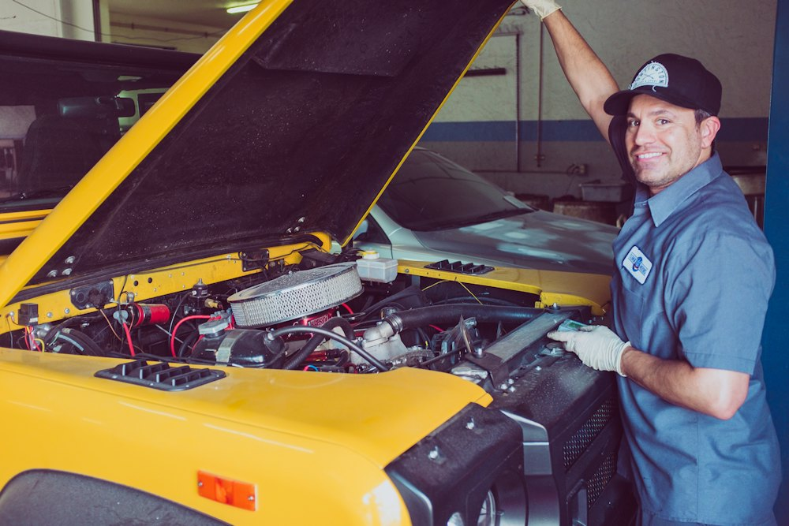

Fleet management
A connected fleet, visible down to the fuel gauge
Every NorthLane vehicle streams location, fuel, mileage and maintenance data. Explore a live sample of our fleet below.
Vehicle directory
Fleet analytics
Utilization and availability
Average utilization by vehicle type
Share of available hours on paid moves, last 30 daysVehicle status
Right now
Run your own fleet on NorthLane
Fleet managers get live maps, maintenance scheduling and fuel analytics in the Fleet Control Center.